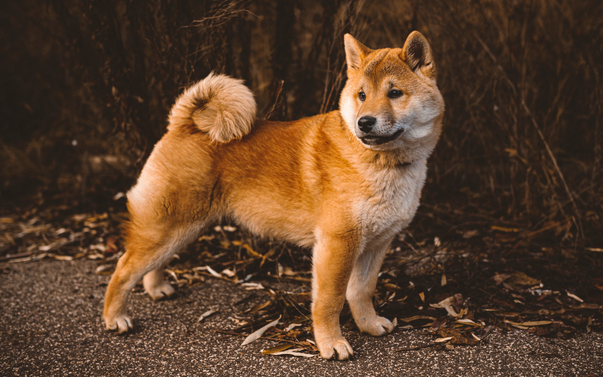
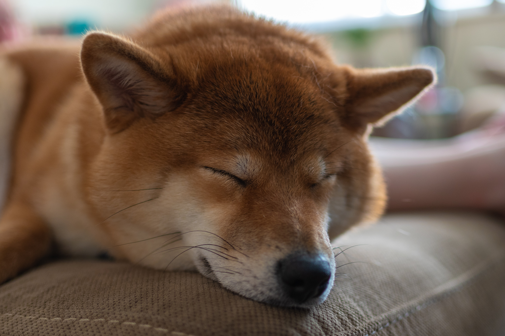
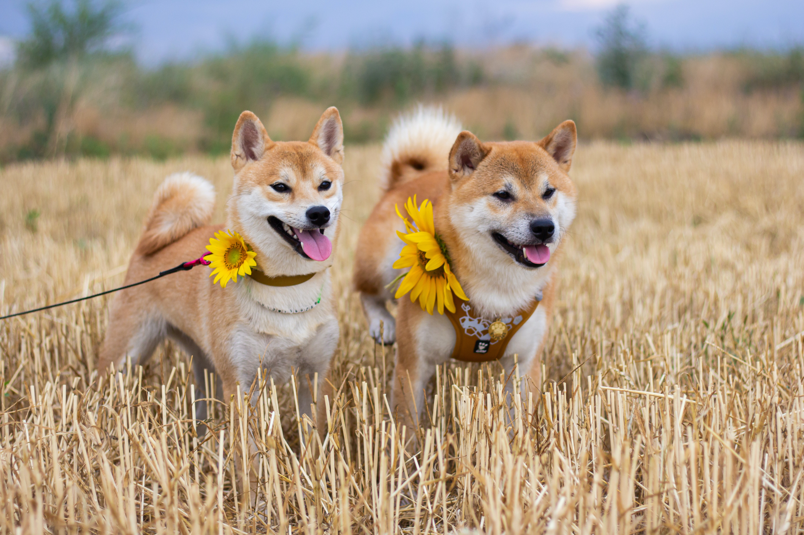
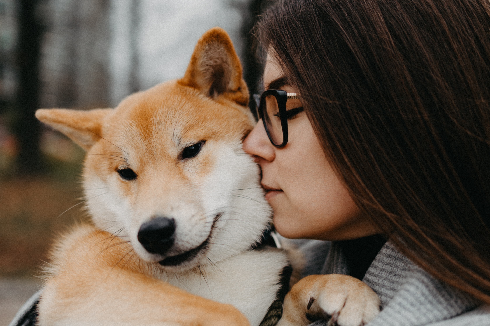
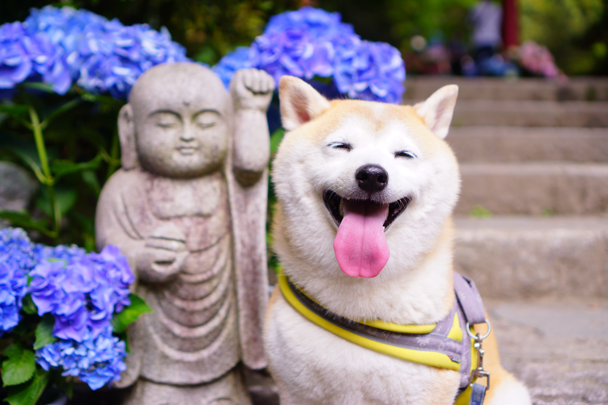

Shibas are considered as heckin good bois all over the world. This page is dedicated to these good bois. Enjoy.

Types of Good Bois
Bored and Lazy Dogesh 🥱
Happy Dogesh with Dogelina 👁👄👁
Naughty Dogesh with QT 🌝
Happy and content Dogesh 🤗
"If I chew something up, all of the pieces are mine. If I can take it from you, it's mine."
--Dogesh/Shiba Inu
This was made out of love for the Shiba Inu, under 3 hours;) Join our Reddit communities like r/dogelore
which has 338k members and r/aww which has 34m members for daily dose of cute poison.